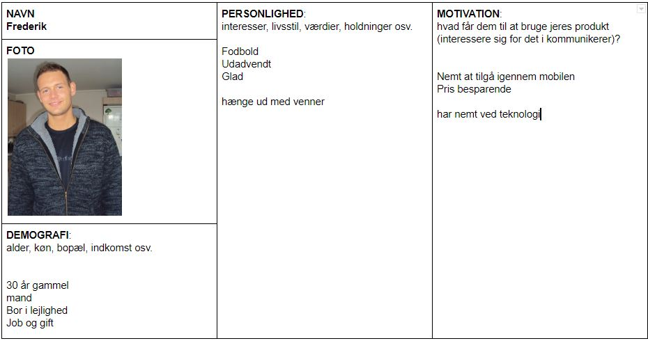
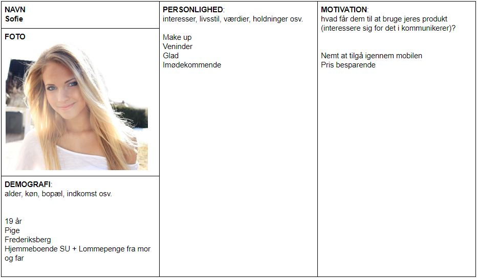

Personaer og målgruppe
Persona1
 Målgruppe Beskrivelse
Målgruppebeskrivelse Bruger segmentet der typisk benytter sig af Joe & The Juice er unge mennesker i alderen 15-25 år. Joe & The Juice skaber rammerne for et ungt og hipt miljø, som appellerer meget til ungdommen. Juicebaren er en ung og frisk udgave, af de traditionelle og gammeldags kaffebarer. Brugeren ville typisk komme på Joe & The Juice, for at få en hurtig snack/frokost på farten.